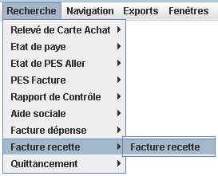

Etat de Facture Recette
Description de l'état de Facture Recette.
On accède aux recherches sur Facture par le menu Recherche / Facture Recette / Facture Recette

Ces recherches renvoient toujours une liste de Facture
Les critères de recherche possibles sont :
Filtre selon le fournisseur
Permet de filtrer selon le prix HT d'une ligne de facture.
Permet de filtrer selon la quantité d'une ligne de facture.
Permet de filtrer sur le montant total HT des factures.
Permet de filtrer sur le montant HT d'une facture.
Permet de filtrer sur le montant total TTC des factures.
Permet de filtrer sur le montant TTC d'une facture.
Permet de filtrer sur le numéro de carte d'achat.
Permet de filtrer sur le numéro de marché.
Permet de filtrer sur le numéro de facture.
Permet de filtrer sur le numéro de commande.
Permet de filtrer sur le produit.
Permet de filtrer sur le numéro de nature.